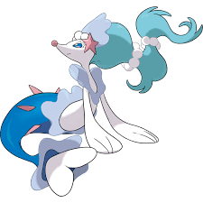

Guia dos Pokemon

Primarina
Descrição
Primarina, o Pokémon Solista de tipo Água/Fada (nº 730), é a forma final de Popplio, conhecida por seu canto
angelical e controle de bolhas de água via ondas sonoras. Introduzida na 7ª Geração, esta criatura de 1,8m e
44kg atua como uma "primadona" que conduz shows, passando sua melodia por gerações e usando-a para abater
presas.
Características Principais:
- Aparência: Semelhante a um leão-marinho, possui longos cabelos azulados com pérolas, uma cauda rechonchuda e
cílios brancos. Sua forma shiny apresenta tons de rosa e cabelo amarelo.
- Tipo e Fraquezas: Água/Fada. É fraco contra ataques dos tipos Grama, Elétrico e Veneno.
- Habilidades: Torrent (Torrente).
- Comportamento: Cuida meticulosamente de sua voz. Em batalhas, utiliza "balões de água" que move com canções
e danças.
- Ataques Característicos: Utiliza movimentos como Ária Cintilante (Sparkling Aria) e Opereta Oceânica.
- Primarina valoriza a harmonia e é conhecida por sua natureza alegre e amigável, frequentemente agindo como
guardiã em seu habitat.